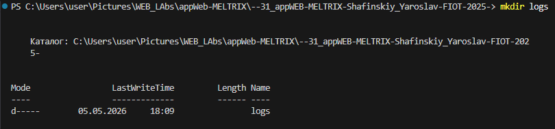
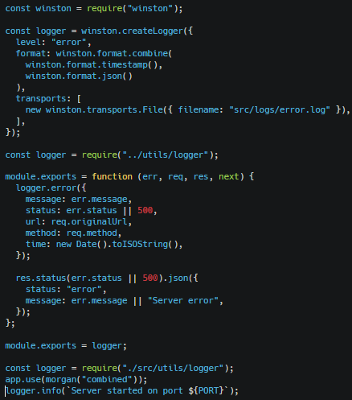
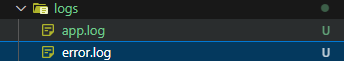
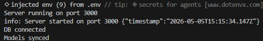
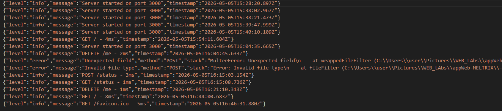

Файлове логування подій + Обробка помилок
Створюємо папку для відображення логів та помилок
Зображення

loger.js
error.middleware.js
server.js
Зображення

Вигляд папки логів, вивід у консолі те що логи працюють, файл з логами всіх запитів + помилок
Зображення


